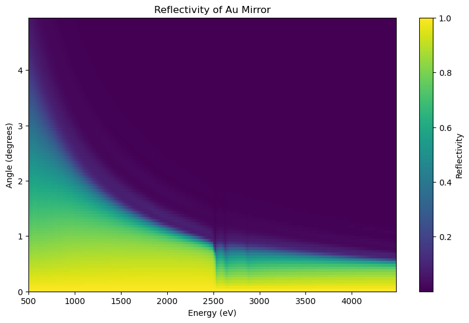
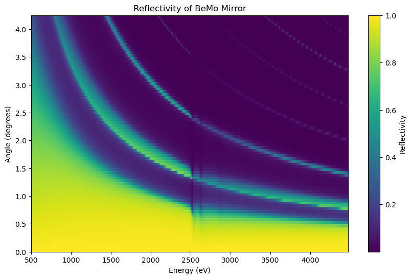
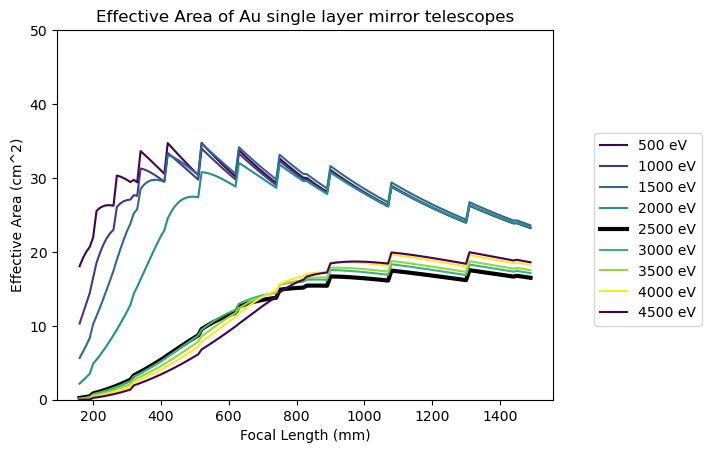
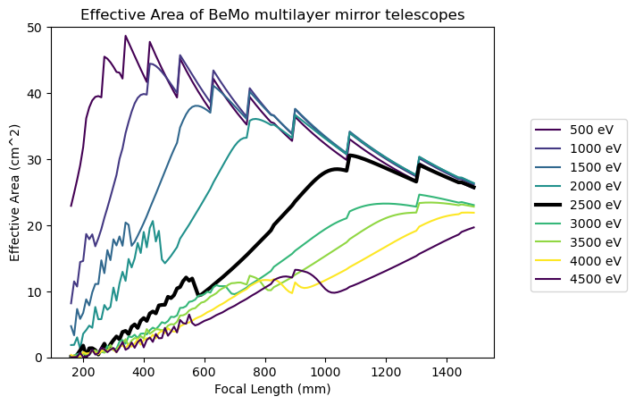
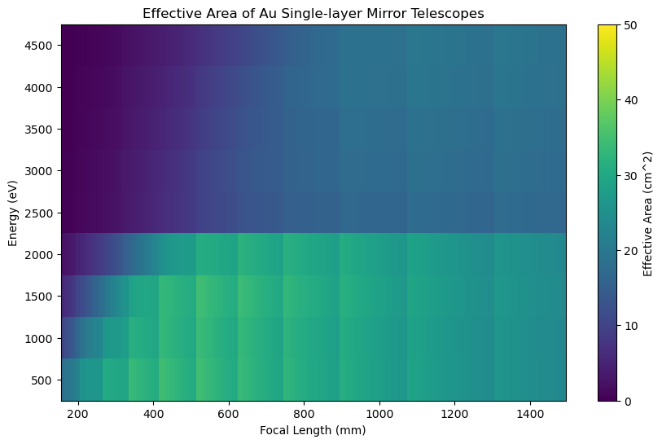
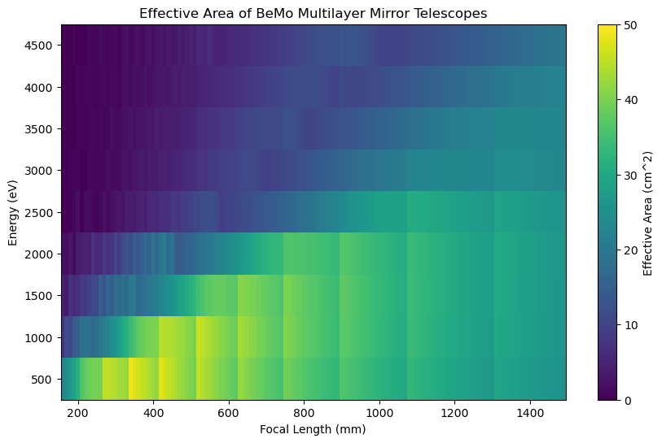

💡 Click image to open high-resolution version in a new tabFigure 1: Reflectivity of a gold mirror
Reflectivity as a function of energy (eV) and grazing incidence angle (degrees).

💡 Click image to open high-resolution version in a new tabFigure 2: Reflectivity of a Be/Mo multilayer mirror
Reflectivity as a function of energy (eV) and grazing incidence angle (degrees).

💡 Click image to open high-resolution version in a new tabFigure 3: Effective area of Au singlelayer telescopes
Effective area at various focal lengths and energies. Boosts in effective area produce the sawtooth pattern when additional shells are nested into the array, increasing the geometric area when space is available for an additional shell, given that the shells become more parallel at long focal lengths.

💡 Click image to open high-resolution version in a new tabFigure 4: Effective area of BeMo multilayer telescopes
Effective area at various focal lengths and energies. Boosts in effective area produce the sawtooth pattern when additional shells are nested into the array, increasing the geometric area when space is available for an additional shell, given that the shells become more parallel at long focal lengths.

💡 Click image to open high-resolution version in a new tabFigure 5: Effective area of Au singlelayer telescopes
Effective area at various focal lengths and energies. Boosts in effective area produce the discontinuous patches when additional shells are nested into the array, increasing the geometric area when space is available for an additional shell, given that the shells become more parallel at long focal lengths.

💡 Click image to open high-resolution version in a new tabFigure 6: Effective area of BeMo multilayer telescopes
Effective area at various focal lengths and energies. Boosts in effective area produce the discontinuous patches when additional shells are nested into the array, increasing the geometric area when space is available for an additional shell, given that the shells become more parallel at long focal lengths.